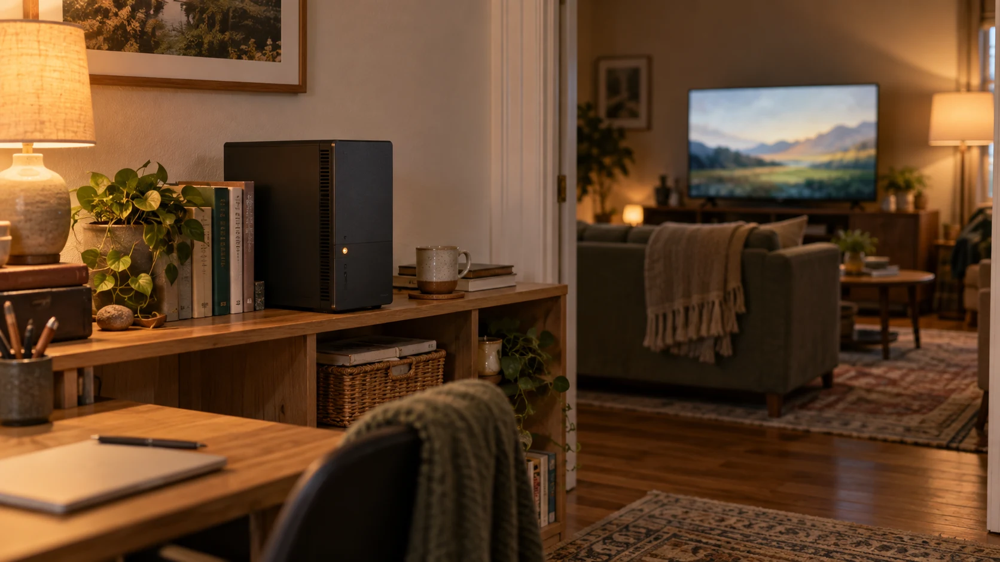

Beebo for Linux (beta)
Beebo for Linux is the same desktop media server as the Windows version, packaged as an AppImage and a .deb. Version 0.1.82 is a beta and is available to download below. It has not yet been run on a real Linux desktop by a person, and Linux has no automatic updates yet.
Testers wanted — posted . We need testers on real Linux PCs. Real feedback earns a lifetime streaming pass. Help test Linux →

Status: Beta Version 0.1.82, the same version as Windows 0.1.82. Built on a real Linux toolchain; it starts and answers on its web address in an automated check (run headless in Linux under WSL). It has not yet been run on a real Linux desktop by a person, and it is not code-signed. See why this build is different from the old one. Please read the honest limits.
Download
Beebo for Linux 0.1.82 (beta) for 64-bit x86-64 PCs. Pick one file; you do not need both.
- AppImage: Beebo.Entertainment-0.1.82.AppImage · 323.0 MB (323,011,600 bytes)
SHA-2561820efdf4983d411c00d3e71c0251ace8f657c04ad5ed5c7d3df935149a25a20 - .deb for Debian and Ubuntu: Beebo.Entertainment_0.1.82_amd64.deb · 269.7 MB (269,749,948 bytes)
SHA-256d09aceff2769a303b7432a7aa2cd498206325d613731e8e04cd3c3aafbf94ec6
Both include the bundled LGPL video converter. Neither is code-signed. The headless Docker image (also a beta) is not offered for download right now.
The Linux build is for 64-bit x86-64 PCs only. There is no ARM (Raspberry Pi) desktop build.
Why this build is different from the old one
The old 0.1.58 Linux build was removed on October 4, 2026 because it was many versions behind. This one is the same version as Windows.
- Built like the Windows installer. The program code is minified and no extra source is included. Apart from hashed file names, the app contents match the Windows build byte for byte.
- Honest status: built on a real Linux toolchain, and it starts and answers on its web address in an automated check (run headless in Linux under WSL). A person has not yet run it on a real Linux desktop.
- The release notes list what is in each version.
What it is
Beebo for Linux is the same desktop server as the Windows version, packaged as an AppImage and a .deb package. You point it at your own movie and show folders, and you watch on the Android app, in any web browser, or by casting to a Chromecast or Google TV. Everything else about how Beebo works is the same as on Windows.
Requirements
- A 64-bit PC (x86-64) running a glibc-based distribution such as Ubuntu 22.04 or newer.
- libfuse2 if you use the AppImage. The package name can differ between distributions.
- A graphical desktop session. This is the desktop app. A separate headless server for Docker and NAS boxes is also in beta; see Docker, NAS and Linux server.
- Your own movie and show files. Beebo includes no movies or shows.
How well it has been tested
This is a beta. It was built on a real Linux toolchain and, in an automated check run headless in Linux under WSL, it starts and answers on its web address. It has not yet been run on a real Linux desktop by a person, and other distributions and desktops have not been tested by us. If it works or fails for you, please tell us.
Install steps
-
Option A: the .deb package (Ubuntu and Debian)
Download the
.debfile above, then in a terminal in the download folder run:sudo apt install ./Beebo.Entertainment_0.1.82_amd64.debThen start Beebo from your applications menu.
-
Option B: the AppImage (most distributions)
Install libfuse2 with your package manager (on Ubuntu 22.04 and newer it is not installed by default; the package name can differ between distributions), download the
.AppImagefile above, and make it runnable:chmod +x Beebo.Entertainment-0.1.82.AppImageThen run it with
./Beebo.Entertainment-0.1.82.AppImageor double-click it in your file manager. -
Set up your library
The first time Beebo opens, create your owner account and choose your movie and TV folders, just like on Windows. The setup guide shows the same steps for Windows.
-
Let your phones and TVs reach it
Beebo serves your library on TCP port 47811. If your Linux PC has a firewall, allow that port on your home network only, for example
sudo ufw allow from 192.168.1.0/24 to any port 47811 proto tcp(change the address range to match your network). Then openhttp://<this-pc>:47811from a phone or browser on the same Wi-Fi, or type the address shown in the app.
Honest limits
- Beta. Expect rough edges, and tell us what you find.
- Not yet run on a real Linux desktop by a person. Only an automated start-up check (headless, under WSL) has been done. Not code-signed.
- No automatic updates on Linux yet. You install new versions yourself from this page. Windows has automatic updates; Linux does not.
- Hardware video conversion on Linux is untested. VAAPI and other graphics paths have not been run on real Linux hardware, so expect conversion to use the processor.
- Saved passwords and keys are only encrypted if your system has a keyring such as GNOME Keyring or KWallet. Without one, Beebo keeps them as plain text in its settings file.
- The system tray icon has not been checked on Linux desktops yet.
- Away-from-home connections have not been tested on Linux. Watching at home on your own network is the expected first use.
Questions about Linux
Is there a Linux version of Beebo?
Yes, as a beta. Beebo for Linux is the same desktop media server as the Windows version, packaged as an AppImage and a .deb for 64-bit x86-64 PCs. The current build, 0.1.82, is a beta available to download on this page. It has not yet been run on a real Linux desktop by a person, and Linux has no automatic updates yet.
Where do I download Beebo for Linux?
Beebo for Linux 0.1.82 (AppImage and .deb) is in the Download section above. The old 0.1.58 Linux build was removed on October 4, 2026 because it was many versions behind. The new build is the same version as Windows.
Can I run Beebo on Linux today?
Yes, as a beta. Download the AppImage or the .deb above and follow the install steps. It has not yet been run on a real Linux desktop by a person. You can also watch your library from a Linux PC in any web browser.
Is there a Docker image for a NAS or Linux server?
There is a headless Docker image (beta) for Linux servers and NAS boxes, for amd64 and arm64. It is not offered for download right now. Store listings for Unraid, TrueNAS, CasaOS, Umbrel and Synology are prepared but not submitted, and no NAS model is listed as tested.
Tried it? Tell us what worked and what did not, including your distribution and desktop. This is a plain email to testers@beeboentertainment.com: there is no form and no sign-up.